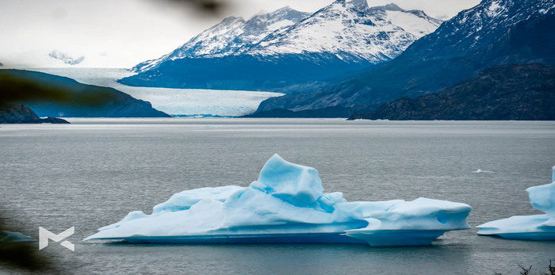
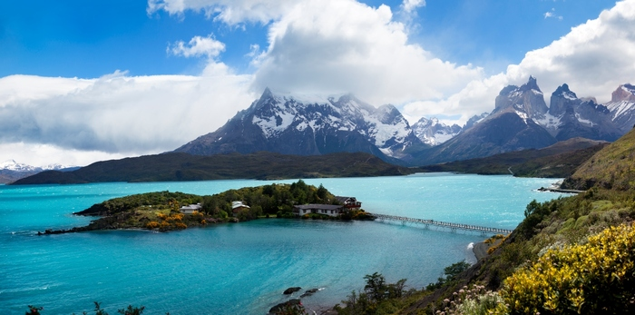

Al ser Chile el país más austral del mundo, la Patagonia chilena recibe el apelativo de "fin del mundo".
Acerca de mi
Soy una persona amante de sur y sus paisajes. Siempre buscando nuevos lugares. Donde trato de exponer una pequeña parte de mi experiencias, retratar y capturar la esencia para cautivar.
Fotógrafo de lugares
Siempre trato de capturar y representar imagenes de los lugares mas impresionantes, como su naturaleza, paisajes.
Recomendaciones
El objetivo es dar a conocer lugares para que las personas se motiven a conocer y que se den cuenta que nuestro sur es uno de los lugares mas bellos para descubrir y dejarse asombrar. Entregar los mejores consejos para que tengan un excelente viaje.
Blogger de viajes
Trato de ir registrando todos los eventos y momentos que vivo por cada viajo que realizo. Incluyendo lugares, personas, vivencias, experiencias, recorridos, tours, tips. Con el fin de dejar un blog con mucho contenido.
Mis trabajos

Glaciar Grey
Un hermoso graciar hubicado dentro de Parque Nacional Torres del Paine.

Parque Nacional Torres del Paine
Una captura de los alrededores de las torres del paine un lugar fascinante.
Contáctame
Me pueden contactar por esta via para recomendar nuevos lugares para visitar o para entregar algun comentario.